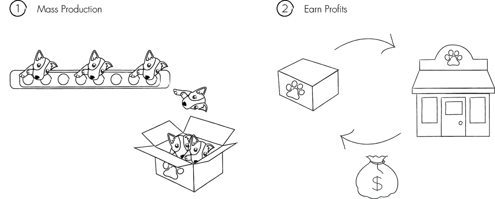
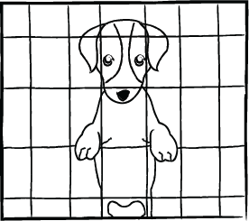
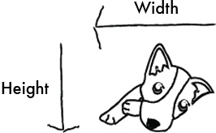
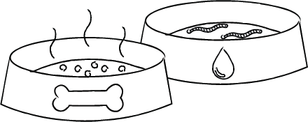
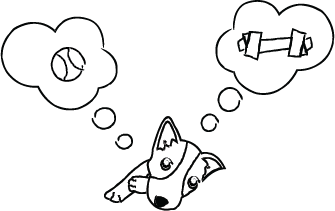
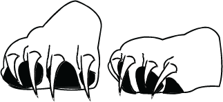
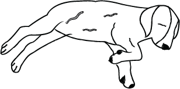
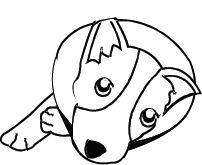

Length: Measure the length of your dog from nose to tail. When measuring the tail, be sure to add approximately 2-4 inches to the overall length, depending on the size of your dog.
Height: To determine the height of the crate you will need, measure your dog from the top of the head to the ground. If your dog has naturally erect ears, measure from the tip of the ears.
Width: To obtain the width of your crate, add approximately 2 inches for smaller breeds and 4 inches for larger breeds.
Height: To determine the height of the crate you will need, measure your dog from the top of the head to the ground. If your dog has naturally erect ears, measure from the tip of the ears.
Width: To obtain the width of your crate, add approximately 2 inches for smaller breeds and 4 inches for larger breeds.





They are usually down with mental health.
Breeders who use pressure sales tactics
Sellers who have many types of purebreds or designer breeds
Puppies being sold at less than six weeks old
Breeders who are reluctant to show potential customers the entire premises of breeding
Don't buy from the Internet
Sellers who have many types of purebreds or designer breeds
Puppies being sold at less than six weeks old
Breeders who are reluctant to show potential customers the entire premises of breeding
Don't buy from the Internet
The Woof Infinity Project is a community project aimed to help support animal welfare in Singapore. It is to help raise awareness for the animal cruelty that exists today in the puppy mills industry. $1 from every rider at CruCycle will go towards supporting a local shelter partner every month to assist with the medical bills needed to keep the pups healthy and happy. We believe that learning, educating and spreading the word for this cause is truly beneficial for our furry friends.
Find out more here.
Find out more here.